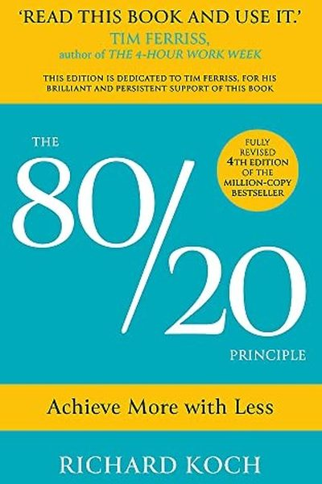

Library › Productivity
The 80/20 Principle — Summary & Key Lessons

The secret of the few that drive the many — the Pareto Principle applied to money, work and life.
📖 OPEN THE FULL INTERACTIVE BREAKDOWN →🌐 Read it in Hindi, Hinglish, Gujarati, Tamil & 22 more languages — free, with audio.
💡 The Big Idea
In 1897, Vilfredo Pareto noticed 20% of Italy's population owned 80% of the land — and the pattern keeps showing up everywhere: 20% of customers make 80% of revenue, 20% of your work produces 80% of your results, 20% of your clothes get worn 80% of the time. Koch's book turns this curiosity into a life philosophy: find the vital few, concentrate on them, and systematically neglect the trivial many. You don't need to do more — you need to do the right 20%.
🧠 The 5 Key Lessons
Lesson 1: The Magic Ratio Is Everywhere
The Principle
The 80/20 Principle: roughly 80% of effects come from 20% of causes — and the imbalance is often far more extreme (95/5, 99/1). It is not a law of physics but a pattern that recurs in business, wealth, crime, books, friendships, software bugs. Once you start looking, you see it everywhere — and you see that most effort is wasted by design.
📖 Example: Koch lists the evidence: 20% of products generate most profit; 20% of criminals commit most crime; 20% of roads carry most traffic; 20% of your friends give you 80% of your joy. The imbalance is the rule, not the exception. Read the full example →
⚡ Do this: This week, run a quick 80/20 audit on one area (customers, tasks, habits): list the inputs, rank them, and find where the 80% actually comes from.
Lesson 2: Find Your 20%
Finding the Vital Few
The practical question is always: which 20% of my effort produces 80% of my results? Koch's method is measurement + ruthless honesty: track where time and money actually go, then rank activities by output per hour. Most people discover their 'vital few' are not what they assumed — and that they're spending most of the week on the trivial many.
📖 Example: Koch's consulting clients routinely find that a handful of clients or products fund the company while dozens of 'busy' activities eat the margin. One firm he studied got 90% of profit from 3% of customers. Read the full example →
⚡ Do this: Track your time for 3 days in 30-minute blocks. At the end, rank your activities by result per hour. Circle the top 20% — and the bottom 50%.
Lesson 3: 80/20 Your Work: Do Less, Achieve More
Work
Koch's work philosophy: don't try to do everything well — that's the recipe for mediocrity. Identify the few activities where you're exceptional or where leverage is highest, and delegate, automate or drop the rest. The most successful people are not the busiest; they are the most concentrated. Work smart on the vital few, and let the trivial many go.
📖 Example: Koch tells how he 'failed' at most of his job as a young consultant — and got promoted anyway, because the 20% of work he did brilliantly (high-value strategy) mattered more than the 80% he did averagely. Read the full example →
⚡ Do this: List your 10 main work activities. Ask: 'Which two, done excellently, would change my career?' Schedule those first — and politely stop doing the bottom three.
Lesson 4: 80/20 Your Life
Life
The principle applies to happiness too: 20% of your activities, people and places give you 80% of your joy. Koch's radical suggestion — design your life around your 20%: more of the people who energize you, fewer of those who drain you; more of the hobbies that recharge you, less of the 'should' activities that empty you. Efficiency isn't only for the office.
📖 Example: Koch describes a friend who mapped his week and found that one hobby (sailing) and one friend group produced nearly all his genuine happiness — while work consumed 70% of his time for 20% of his joy. He restructured both. Read the full example →
⚡ Do this: List what gives you real joy. Cut one energy-draining commitment this month and add one joy-multiplier. Repeat quarterly.
Lesson 5: The 20% Shifts — Re-audit Constantly
Dynamism
The vital few are not fixed: markets change, skills develop, seasons turn. What was 80/20 last year may be 60/40 now — and yesterday's vital 20% can become today's trivial many. Koch's final lesson: make 80/20 thinking a habit, not a one-time audit. Re-measure quarterly, shift resources to the new vital few, and never fall in love with a static list.
📖 Example: Koch notes how companies that kept serving the customers who once made them rich — while the market moved on — died, while those that re-audited and pivoted their '20%' thrived through decades of change. Read the full example →
⚡ Do this: Set a recurring quarterly reminder: 'Re-run my 80/20 audit.' Same method, fresh data, updated decisions.
✅ 5-Step Action Plan
- Run your first 80/20 audit this week — find your real vital few.
- Track 3 days of time in 30-minute blocks and rank result per hour.
- Protect your two career-defining activities; drop the bottom three.
- Cut one draining commitment; add one joy-multiplier.
- Set a quarterly re-audit reminder — the 20% always shifts.
💬 Best Quotes from The 80/20 Principle
- “The 80/20 Principle asserts that a minority of causes, inputs or effort usually lead to a majority of the results.”
- “It is the few that are vital and the many that are trivial.”
- “The best is the enemy of the good — and the trivial is the enemy of the vital.”
Interactive version: mark lessons as read, listen in your language, share quote cards.